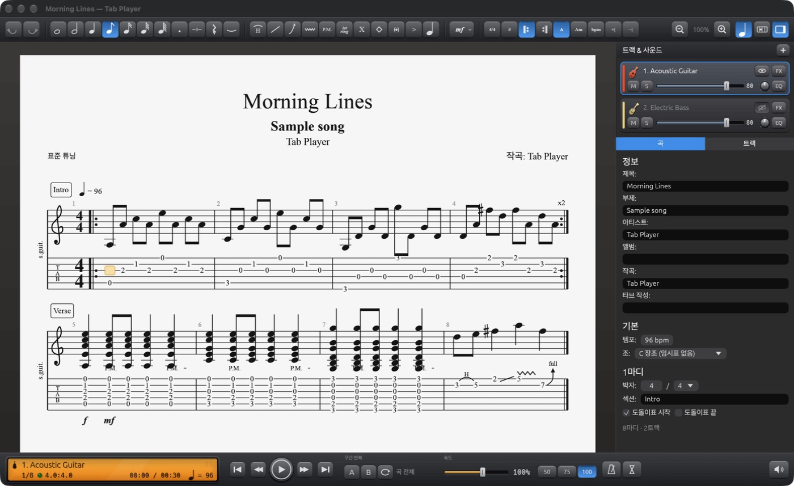
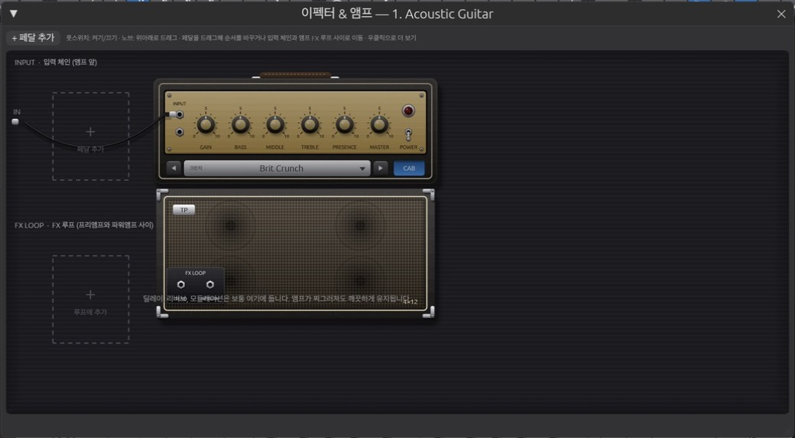

Guitar Pro 파일을 열어 보고, 듣고, 연습하고, 편집하는
무료 macOS 기타 타브 플레이어
A free macOS tab player to open, hear, practise and edit
Guitar Pro files

악보를 보는 것부터 연습, 사운드, 내보내기까지 한 앱에서.
From reading the score to practising, sound and export, in one app.
GP3·GP4·GP5(.gp3/.gp4/.gp5), GP6(.gpx), GP7·GP8(.gp) 파일을 엽니다. 확장자가 잘못된 다운로드 파일도 내용을 보고 형식을 알아냅니다.
Reads .gp3/.gp4/.gp5, .gpx and .gp (GP7/8). It recognises the format from the contents, so mislabelled downloads still open.
A4 페이지 레이아웃으로 타브와 오선보를 함께 보여 줍니다. 기타, 베이스, 드럼 등 여러 트랙을 지원합니다.
Tablature and standard notation on A4 pages, with multiple tracks: guitar, bass, drums and more.
A–B 구간 반복, 재생 속도 조절, 메트로놈, 카운트인으로 어려운 부분을 천천히 반복 연습하세요.
A–B practice loop, playback speed, metronome and count-in to work through hard passages slowly.
가상 지판이나 프렛 번호로 음표를 입력하고 해머온, 슬라이드, 벤딩, 비브라토, 팜뮤트, 하모닉스 등 주법을 넣을 수 있습니다.
Enter notes on the virtual fretboard or by fret number, and add hammer-ons, slides, bends, vibrato, palm mutes, harmonics and more.
트랙마다 이펙터 페달과 앰프·캐비닛을 연결해 톤을 만듭니다. 트랙별 볼륨, 팬, EQ, 뮤트, 솔로도 지원합니다.
Patch effect pedals into an amp and cabinet per track, plus per-track volume, pan, EQ, mute and solo.
macOS 표준 MIDI, 내장 신스, 외부 MIDI 음원(Sound Canvas 등 GS/GM 모듈), 악기 플러그인(AU) 중에서 고를 수 있습니다.
Choose the macOS standard MIDI synth, the built-in synth, an external MIDI module (Sound Canvas or any GS/GM module) or an instrument plug-in (AU).
마이크로 악기 소리를 듣고 음정을 표시하는 튜너가 들어 있습니다.
A built-in tuner listens to your instrument through the microphone.
PDF, MIDI, ASCII 타브로 내보내고 바로 프린트할 수 있습니다. 작업한 곡은 Tab Player 파일(.tws)로 저장됩니다.
Export to PDF, MIDI or ASCII tab, or print directly. Your songs save as Tab Player files (.tws).
한국어, English, 日本語, 简体中文을 지원하며 시스템 언어를 자동으로 따릅니다.
Korean, English, Japanese and Simplified Chinese; follows your system language automatically.

Tab Player는 단독으로도 쓸 수 있지만, 가상 음원 플러그인 SoundCompas를 함께 설치하면 훨씬 풍부하고 생생한 사운드로 연주를 들을 수 있습니다. SoundCompas는 Roland Sound Canvas SC-8850을 모티프로 만든 음원으로, Tab Player 안에서 바로 불러와 사운드 모듈처럼 사용할 수 있습니다.
Tab Player works on its own, but installing the virtual instrument plug-in SoundCompas gives your songs a much richer, more lifelike sound. Inspired by the Roland Sound Canvas SC-8850, it loads right inside Tab Player and plays like a sound module.
SoundCompas 받기 →Get SoundCompas →~/Library/Audio/Plug-Ins/Components에 설치됩니다)~/Library/Audio/Plug-Ins/Components).SoundCompas가 없어도 macOS 기본 MIDI 음원이나 내장 신스로 재생됩니다.
Without SoundCompas, songs play through the macOS MIDI synth or the built-in synth.
무료입니다. 내 Mac에 맞는 파일을 고르세요. 잘 모르겠다면 Universal을 받으면 됩니다.
Free. Pick the file for your Mac — if unsure, take Universal.
M1·M2·M3·M4 등 Apple 칩 Mac
Macs with Apple chips (M1, M2, M3, M4…)
TabPlayer-apple-silicon.zipTab Player는 App Store 밖에서 배포되므로 처음 실행할 때 macOS 확인 절차가 한 번 필요할 수 있습니다.
Tab Player is distributed outside the App Store, so macOS may ask you to confirm the first launch.
Tab Player.app이 나옵니다.Tab Player.app을 Finder의 응용 프로그램 폴더로 드래그합니다.Tab Player.app.Tab Player.app into your Applications folder.| 운영체제 | macOS 12 Monterey 이상 |
| 프로세서 | Apple Silicon 또는 Intel |
| 여는 파일 | .gp3 · .gp4 · .gp5 · .gpx · .gp · .tws |
| 내보내기 | PDF · MIDI (.mid) · ASCII 타브 (.txt) · 프린트 |
| 사운드 | macOS 표준 MIDI · 내장 신스 · 외부 MIDI 장치 · 악기 플러그인 (AU, 예: SoundCompas) |
| 언어 | 한국어 · English · 日本語 · 简体中文 |
| OS | macOS 12 Monterey or later |
| Processor | Apple Silicon or Intel |
| Opens | .gp3 · .gp4 · .gp5 · .gpx · .gp · .tws |
| Exports | PDF · MIDI (.mid) · ASCII tab (.txt) · Print |
| Sound | macOS standard MIDI · built-in synth · external MIDI device · instrument plug-in (AU, e.g. SoundCompas) |
| Languages | Korean · English · Japanese · Simplified Chinese |
네, 무료로 내려받아 사용할 수 있습니다. 소스 코드는 공개하지 않고 실행 파일만 배포합니다.
SoundCompas를 설치하고 사운드 출력에서 악기 플러그인 → SoundCompas를 선택해 보세요. 훨씬 풍부한 사운드로 들을 수 있습니다. 외부 MIDI 음원(Sound Canvas 등)을 연결해 쓸 수도 있습니다.
App Store 밖에서 받은 앱이라 나타나는 macOS 기본 경고입니다. 위 설치 방법의 3–4단계를 따라 주세요.
일부 파일은 내용이 손상되었거나 지원하지 않는 요소가 있을 수 있습니다. 파일과 함께 Issues에 알려 주시면 확인하겠습니다.
GitHub Issues에 남겨 주세요.
Yes, it's free to download and use. Only the app is distributed; the source code is not published.
Install SoundCompas and choose Instrument plug-in → SoundCompas under Sound output for a much richer sound. You can also connect an external MIDI module such as a Sound Canvas.
That's the standard warning for apps from outside the App Store. Follow steps 3–4 under Installing.
Some files may be damaged or use something not yet supported. Please report it on Issues with the file attached.
On GitHub Issues.